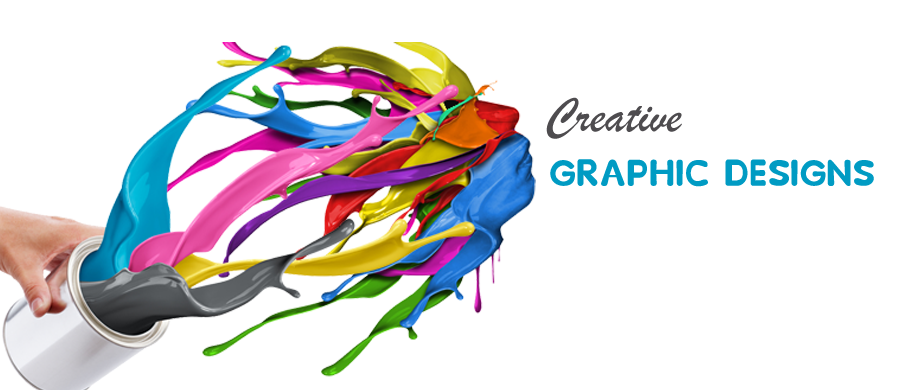

Portfolio Experience
Graphic Designing

Graphic design is a profession, academic discipline and applied art whose activity consists in projecting visual communications intended to transmit specific messages to social groups, with specific objectives. Graphic design is an interdisciplinary branch of design and of the fine art
Click Here to Full Project
Web Development

Web development is the work involved in developing a website for the Internet or an intranet. Web development can range from developing a simple single static page of plain text to complex web applications, electronic businesses, and social network services.
Click Here to Full Project